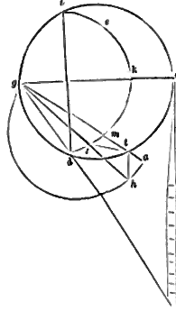
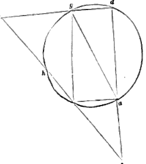
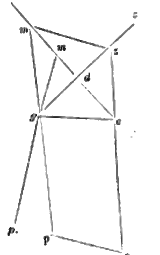
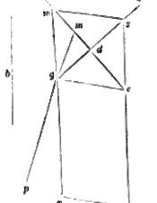

DISTINCTIO V — EXTRACTION OF CUBE ROOTS¶
On the Finding of Cube Roots (De Radicibus Cubicis Inveniendis) in Theory and Practice
Source Text: fibonacci:pg-5 (Boncompagni Vol. II, pp. 148–158 · fol. 92v–100r) · Latin (1220 / Boncompagni 1862) · Summary · GEOMETOR Notes
Positional Extraction of Cube Roots¶
Latin Locus: Distinctio V (pp. 148–158) · Commentary: Notes on Cube-Root Extraction
A cube number is that which arises from the multiplication of three equal numbers, or from any square number multiplied by its root, such as 8 and 27: for 8 arises from the multiplication of 2 by 2 multiplied by 2, or from the multiplication of 4 by its root, namely 2, and 27 arises from three threes, or from nine multiplied by its root, which is 3. For the cube root of eight is 2, and the cube root of 27 is 3; and so understand concerning the remaining cube numbers and their roots: but the remaining numbers, which are not cubes, cannot have cube roots in numbers; whence their cube roots are called surds. Now I shall demonstrate how the cube root of any number may be found by approximation.
f. 0156 · p. 149But first I wish to demonstrate at present whence the method of finding these roots proceeds. Whenever a line is divided into two parts, the cubes of the parts themselves together with three times the product of the square of each section into the other will be equal to the cube of the whole line. For example: let line .ab. be divided as you please at point .g. I say that the cubes of the parts .ag. and .gb., together with three times the square of the part .ag. into .gb., and three times the square of the part .bg. into .ga., are equal to the cube of the whole line .ab.; let this be seen in numbers: let the whole .ab. be 5, and let .ag. be 3; there will remain .gb. as 2; the cubes of which parts are 27 and 8, which joined together make 35; and from three times the square of 3 into 2 come 54, and from three times the square of 2 into 3 come 36; and thus in sum are obtained 125, namely the cube of 5, that is, of line .ab. For 5 is the cube root of 125, because multiplying 5 by itself makes 25, and multiplying this by 5 makes 125. And having reflected for a long time upon this definition, I discovered this method of finding roots, as I shall explain below. But first I wish to show how any number ought to be cubed according to this definition, so that if you wish to cube 12, take the cube of 10 and the cube of 2, into which parts 12 is divided, and they will be 1008; upon which add three times the square of 10 multiplied by 2, and three times the square of 2 multiplied by 10, namely 600 and 120, and in sum there will be 1728, which is the cube of 12: and thus you can operate in cubing whatever number you wish. Whence let us return to finding the cube roots of any numbers. First it must be known which are the cube numbers formed from the numbers of the first rank. For the cube of unity is 1, of two 8, of three 27, of four 64, of five 125, of six 216, of seven 343, of eight 512, of nine 729, and the cube of ten 1000; when these are known in order by heart, know that the cube root of numbers of one, two, or three figures is one figure; of four, five, or six figures the cube root is a number of two figures; of seven, eight, or nine figures the root is a number of three figures: and so always thereafter, as a number grows by one, two, or three figures, its root grows by one figure only. These things being understood, it is necessary to teach how to find the difference between any cube number and the one following it; therefore multiply the root of the one by the root of the other, and triple what results, and add 1 to the sum, which arises from cubing the unit by which the root of the greater cube exceeds the root of the lesser: for example, I wish to know how much the cube made from 3 adds over the cube made from 2: triple the product of 2 into 3, which will be 18; to which add 1, and it will be 19 for the sought difference: which 19, if added onto the cube made from 2, namely onto 8, will yield 27, namely the cube made from 3. These things explained, to find the root of 47 by approximation, take the greatest root that 47 has in whole numbers, and it is 3; whose cube, namely 27, subtract from 47, leaving 20; therefore the cube root of 47 is 3, and 20 remains. Let this 3 be line .ab., and you shall proportion 20 to the difference between the cube made from 3 and the cube made from 4; which difference you will find from three times the product of 3 into 4 with 1 added, or by subtracting 27 from 64; which difference is 37; of which 20 is more than half: wherefore add \(\frac{1}{2}\) upon line .ab., and let it be .bg.; and let the cube of number .ag. be found; which will be found thus: I shall cube the parts .ab. and .bg., giving \(27\frac{1}{8}\); upon which I shall add three times the square of .ab. into .bg., and three times the square of .gb. into .ba., that is \(13\frac{1}{2}\) and \(2\frac{1}{4}\), giving \(42\frac{7}{8}\); which fall short of 47 by \(4\frac{1}{8}\); therefore the cube root of 47 is \(3\frac{1}{2}\), and there remains over
f. 0157 · p. 150\(4\frac{1}{8}\); which you shall also proportion to the number arising from three times .ag. into 4, which is the root of the following cube; which number is 42: of which the aforesaid \(4\frac{1}{8}\) is nearly a tenth part: wherefore add \(\frac{1}{10}\) to the number .bg., and let it be .gd.; whose cube, which is \(\frac{1}{1000}\), together with three times the square of .ag. multiplied by .gd., namely \(3\frac{27}{40}\), and also together with three times the square of .gd. multiplied by .ga., namely \(\frac{21}{200}\), subtract from \(4\frac{1}{8}\), and there will remain \(\frac{344}{1000}\), which is \(\frac{43}{125}\): therefore the cube root of 47 is \(3\frac{1}{2}\frac{1}{10}\), namely \(3\frac{3}{5}\), and there remains a little more than \(\frac{1}{3}\) of one whole: which third if you proportion to the number that comes from three times .ad. into 4, you will surely come closer to the root of 47. Likewise, if you wish to find the cube root of 900, you already know that the root they have in whole numbers, since it is a number of the third rank, is one figure only; take it, and it is 9, whose cube is 729; when these are subtracted from 900, there remain 171; and you will find the difference from the cube of 9 to the cube of 10, which difference is 271: proportion therefore the remaining 171 with 271, and there come a little less than \(\frac{2}{3}\), the cube of which two thirds, namely \(\frac{8}{27}\), subtract from 171, leaving \(170\frac{19}{27}\): then multiply three times the square of 9, namely 243, by \(\frac{2}{3}\), that is, take \(\frac{2}{3}\) of 243, giving 162; which subtract from \(170\frac{19}{27}\), leaving \(8\frac{19}{27}\): then take the square of \(\frac{2}{3}\), giving \(\frac{4}{9}\); triple this, giving \(1\frac{1}{3}\); multiply this number by 9, giving 12; and since this cannot be subtracted from \(8\frac{19}{27}\), subtract \(8\frac{19}{27}\) from 12, leaving \(3\frac{8}{27}\): therefore the diminished root of 900 is \(9\frac{2}{3}\), and it lacks \(3\frac{8}{27}\), that is, the cube of \(9\frac{2}{3}\) is \(903\frac{8}{27}\): which you will find if you make thirds of \(9\frac{2}{3}\), namely 29, and cube 29, and divide its cube by 27, namely by the cube of three. And thus if you wish to come nearer to the root of 900, multiply \(9\frac{2}{3}\) by 10, and triple what results; or multiply triple of \(9\frac{2}{3}\) by 10, giving 290; into which divide \(3\frac{8}{27}\); and cast away what comes forth from \(9\frac{2}{3}\), and you will have what was proposed. Again, if you wish to find the root of 2345, you already know that the root they have in whole numbers is a number of two figures: wherefore the last figure of that root must be placed under the second rank; for what figure it ought to be, I shall show. Leave aside therefore from 2345 three figures, which make the third, second, and first rank, and there remain 2; from which take the greatest root they have in whole numbers, which is 1, and 1 remains; which root, namely 1, place under 4, and for the 1 that remains, place 1 above 2; and you shall join it with 345, making 1345; and thus for the root of 2345 is obtained 10, namely 1 in the second rank, and 1345 remains; before which placed 1 it is necessary to place such a figure under 5 that, multiplied by three times the square of the figure placed under 4, and also that same placed figure multiplied by three times the square of the figure to be placed, and also the figure to be placed itself cubed, when all these are subtracted from 1345, there shall not remain beyond three times the product of the whole found root into the following number in the order of numbers. Which figure you will not be able to find except by customary judgment; for that figure will be 3, which placed under 5, you shall triple the square of the placed figure, giving 3, which you shall place under the third rank; because when the second rank is multiplied by itself, it makes the third rank; and you shall multiply the 3 placed under 5 by the 3 placed under 3, giving 9; which subtract from the joining of 1 placed above 2 with the following 3, namely 13, leaving 4, which place above 5 of the third rank; and triple the square of the 3 placed under 5, giving 27, which you shall place under the second and first rank; because when the first rank multiplies itself, it makes the first rank, or termination in itself, you shall multiply this 27 by the 1 placed under 4, and subtract that product from the joining of 4 placed above 3 and the
f. 0158 · p. 151following 4, namely from 44, leaving 17 above that 44; which you shall join with 5 of the first rank, making 175; from which subtract the cube of the 3 placed under 5, namely 27, leaving 148, which do not exceed three times the product of the found root, namely 13, into the number following it, namely 14: therefore the cube root of 2345 is 13, and 148 remains: take therefore three times the product of 13 into 14, and add 1, giving 547: of which 148 is a little more than a fourth part. Wherefore add \(\frac{1}{4}\) to the found root, giving \(13\frac{1}{4}\): subtract therefore the cube of \(\frac{1}{4}\), namely \(\frac{1}{64}\), from 148, leaving \(147\frac{63}{64}\); and take three times the square of 13, giving 507; which multiply by \(\frac{1}{4}\), yielding \(126\frac{3}{4}\); which subtract from \(147\frac{63}{64}\), leaving \(21\frac{15}{64}\). Likewise take three times the square of \(\frac{1}{4}\), namely \(\frac{3}{16}\); and multiply them by 13, yielding \(2\frac{7}{16}\); which subtract from \(21\frac{15}{64}\), leaving \(18\frac{51}{64}\): and thus for the root of 2345 is obtained \(13\frac{1}{4}\), and there remains over from it \(18\frac{51}{64}\): wherefore multiply three times \(13\frac{1}{4}\) by the first following number, namely by 14, giving \(556\frac{1}{2}\): into which divide \(18\frac{51}{64}\), and there will come forth about \(\frac{1}{30}\); which added with \(13\frac{1}{4}\) will render \(13\frac{17}{60}\) for the sought root; and so study to do in like cases.
And if you desire to have the cube root of 56789, you already know from what has been said that its root is a number of two figures. Wherefore, setting aside the first three figures, take the root of the remaining ones, namely of 56, and it will be 3, and 29 remain: place therefore 3 under the second rank, and 29 above 56; and triple the square of the placed 3, giving 27, which place under the fourth and third rank, because when the second figure is multiplied by itself, it makes the third rank, or terminates in it: and strive to place before the placed 3 such a figure that, when it has been multiplied by 27, which are in the fourth and third rank, and that product subtracted from 297, namely from the joining of the aforesaid 29 and the following 7, there may remain a number which, when joined with the following figure, namely with 8, you can subtract from that joining the product of three times the square of the figure to be placed into the placed figure; and there may remain a number which, when joined with 9 of the first rank, you can subtract from it the cube of the figure to be placed itself; and there shall not remain beyond three times the product of the whole found root into the following number. And keep this consideration for every figure to be placed; and that figure will be 8; when placed under the first rank, you shall multiply it by 27, that is first by 2, and afterwards by 7. For from 8 multiplied into 2 come 16; which subtracted from 29 leaves 13 above them; and from 8 multiplied into 7 come 56; which subtracted from 137 leaves 81 above them: after this multiply 8 by itself, giving 64 terminating in the first rank; which triple, giving 192 likewise terminating in the first rank: wherefore place them under their ranks, namely under the third, second, and first; and multiply the last figure of 192 by 3 placed under the second rank, making 3 in the fourth rank: wherefore subtract that 3, namely from the last figure of 81, leaving 5 above 8; and multiply the following figure of 192, namely 9, by the same 3, giving 27 terminating in the third rank; because when the second rank multiplies the second, it makes the third rank: wherefore subtract 27 from 51, which are in the third rank, leaving 24 in the same ranks; which joined with the following 8 give 248; from which subtract the product of the figure of the first rank of 192 into the aforesaid 3, leaving 242: which joined with 9 give 2429: from which subtract the cube of eight, namely 512, leaving 1917. Or otherwise multiply 8 by itself, giving 64; which place under the second and first rank, multiplying
f. 0159 · p. 1526 by 8, and subtracting from 242, leaving 194 above 242; which joined with the following 9 make 1949; from which subtract the product of the first figure of 64 into 8, namely 32, leaving likewise 1917, which exceed three times the product of 38 into 39. Therefore the cube root of 56789 is 38, and 1917 remains from it; which remainder adds \(\frac{3}{7}\) upon the aforesaid 38, and a little more.
Again, if you wish to find the root of 456789, having separated the first three figures, place the root of the remaining three, namely of 456, which is 7, under the second rank; and the remainder, which is 113, place above them; and triple the square of 7, namely 147, place so that they terminate under the third rank; and strive to find the figure that must be placed under the first rank before the placed 7 by the demonstrated method; and it will be 7, which place under the first rank: and multiply them by 1 of 147, giving 7; which subtract from 11, which are above 45, leaving 4 above the fourth rank; which join with the following 3, making 43; from which take away the product of the same 7 into 4 of 147, leaving 15 above 43; which joined with 7 give 157; from which take away the product of the same 7 of the first rank into 7, which are in 47, leaving 108 above 157: then triple the square of 7 of the first rank, giving 147 terminating in the first rank; which multiply in order according to their differences by 7, which are placed under the second rank, according to what we taught in the division of numbers. For from 1 multiplied by 7 come 7; which subtracted from 10 leaves 3 above 0; and from 4 multiplied by 7 come 28; which subtracted from 38 leaves 10 above 38; and from 7 multiplied by 7 come 49; which subtracted from 108 leaves 59 above the third and second rank; which joined with 9 of the first rank make 599; from which subtract the cube of 7, namely 343, leaving 256; and thus the found root is 77, and 256 remain.
Moreover, if you wish to find the root of 9876543, having separated the first three figures, 9876 remain; setting these in another place, find their root in the demonstrated order, and it will be 21, and 615 will remain from them: place therefore 21 under the third and second rank, since the root of seven figures is a number of three figures; and the remainder, which is 615, place above 876, as is here shown; and triple the square of 21, giving 1323, which must be placed terminating in the third rank, in which terminates the product of unity by itself, which is placed under the second rank: when these are thus placed, the last figure of them falls under the sixth rank: then place 4 before 21; which figure is found by the mastery demonstrated above; and you shall multiply this 4 by each figure in order of 1323; and you shall begin to subtract from 6, which is above the sixth rank; because when the first rank multiplies the sixth, it makes the sixth rank: therefore multiply 4 by 1, and subtract from 6, leaving 2 above 6; and 4 by 3, and subtract from 21, leaving 9 above 1; and 4 by 2, and subtract from 95, leaving 87 above the fifth and fourth rank; and 4 by 3, and subtract from 875, leaving 863 above the fifth, fourth, and third rank: then take three times the square of 4, namely 48, and place under the second and first rank; and you shall multiply the 4 of 48 by the 2 of 21 placed in the root, giving 8, which must be subtracted from the number terminating in the fourth rank, namely from 86; because when the second rank multiplies the third, it makes the fourth rank, leaving 78 from 86 above the fifth and fourth rank: and multiply the same 4 by 1 of 21, giving 4, which must be subtracted from the number terminating in the third rank, namely from 783; because when the second rank multiplies
f. 0160 · p. 153


the second, it makes the third rank, leaving 779 above the fifth, fourth, and third rank. Then the 8 remaining from 48 must be multiplied step by step by the same 21; therefore multiply 8 by 2, giving 16, which subtract from the number terminating in the third rank; because when the first rank multiplies the third, it makes the third rank, leaving 763 above the fifth, fourth, and third rank; and 8 by 1 makes 8, which subtract from the number terminating in the second, namely from 7634; because when the first rank multiplies the second, it makes the second rank, leaving 7626 above the fifth, fourth, third, and second rank; which join with 3, which is in the first rank, making 76263; from which subtract the cube of 4, namely 64, leaving 76199 above the found root, which is 214. In the same way, if you wish to find the root of any number of eight or nine figures, leaving aside the first three figures, strive to find the root of the remaining ones by the demonstrated method; and thereafter, having joined their remainder with the three dismissed figures, you shall act according to what we have just done, and you will find what is sought. God willing, in the same way and order you will be able to operate in finding the cube roots of numbers of ten or more figures.
When two numbers fall between unity and any number in continued proportion, the first of them is clearly shown in geometry to be the cube root of the last number. Whence if we wish to find geometrically the cube root of any number, we must use the methods of the ancients, by which it is taught to place two other quantities between two given quantities, so that all four quantities are in one proportion; and although this cannot be worked easily, yet we shall show how it ought to be done. Let there be two given quantities .c. and .f. We wish to place two quantities between .c. and .f. in continued proportion, and let .f. be greater than .c. I shall set out a circle .abgd., whose diameter .ag. is equal to quantity .f.; and I shall place in circle .abgd. a line .gd. equal to quantity .c.; and I shall conceive a half-cylinder standing orthogonally upon semicircle .adg., whose half-roundness falls upon the arc .adg.: wherefore the diameter of the base of the cylinder will fall upon diameter .ag., and its endpoints will be upon points .a. and .g.; and then the plane surface of the half-cylinder will rise orthogonally upon .ag.; and in it I shall draw the semicircle .aeg., whose surface stands orthogonally upon the surface of circle .abgd.; and from point .a. I shall draw straight line .az. making a right angle upon straight line .ga., and I shall make it meet line .gd. at point .z.; and I shall move semicircle .aeg. from the part .a.; and I shall revolve triangle .zag. upon straight line .ag., which remains fixed in its revolution; and when I move semicircle .aeg., point .g. will stand fixed; and I shall do this until arc .aeg. meets line .gz. on the surface of the cylinder at point .h.; and then the diameter of semicircle .aeg. will be straight line .gta.: and I shall join straight line .ht. falling orthogonally upon the surface of the cylinder on arc .atd., and I shall join straight line .ah.: then I shall understand arc .dkb. to be traced by point .d. when triangle .zaig. is revolved, and point .d. falls upon point .b. in its revolution; and I shall join straight line .gh., and mark point .l., where straight line .gh. meets arc .dkb.; and I shall draw straight line .lm. falling orthogonally upon circle .abgd.; and I shall draw straight line .lt.: and since in semicircle .bkd. straight line .lm. is drawn orthogonally upon its diameter .bd., the rectangle .bm. into .md. will be equal to the square on straight line .lm. But to the rectangle .bm. into .md. is equal the rectangle .gm. into .mt., since straight lines .db. and .gt. cut each other in circle
f. 0161 · p. 154


.abgd.; wherefore angle .glt. is right. For angle .gth. is also right, since straight line .ht. is on the surface of the cylinder. And since arc .geha. is a semicircle, angle .gha. will also be right: likewise angle .gml. is right; therefore triangles .gha., .gth., .glt., and .gml. are right-angled, and they have one common angle, namely that under .lgm.; therefore those triangles are similar to one another: and they have sides around the common angle proportional; wherefore as .ag. is to .gh., so is straight line .hg. to .gt., and .tg. to .gl., and .lg. to .gm.: indeed three straight lines are placed continuously proportional between straight lines .gm. and .ga., namely .gl., .gt., and .gh. Also between straight lines .gl. and .ga. fall two straight lines .gt. and .gh. in continued proportion. But to straight line .gl. is equal straight line .gd. And .gd. was equal to straight line .c.; and .ga. is equal to straight line .f.; therefore between quantities .c. and .f. are placed two quantities in continued proportion, which are .gt. and .gh.; wherefore if quantity .c. is one, quantity .gt. will be the cube root of number .f.; which is what needed to be done.
I shall show in another way how I may find two lines between two lines, so that all are continued according to one proportion. I shall set out therefore two lines .ab. and .bg., and let their angle be right. Then I shall join .ag., and make upon line .ag. of triangle .abg. the circle .abg. Then I shall draw from point .a. perpendicular .ad. upon line .ab., and from point .g. upon .bg. perpendicular .dg.; and I shall draw both in a straight line as far as .z. and .e.: then I shall pass a ruler that turns upon point .b. and is not separated from it, thus cutting the two lines .dz. and .de., and let it not cease moving until that which falls from them between .z. and .b. be equal to that which falls between .e. and .h.: therefore line .zh. is equal to line .eb.; therefore the product of .zh. into .zb. is equal to the product of .be. into .he.: indeed .eb. into .he. is equal to .de. into .ge., and .hz. into .zb. is equal to .dz. into .za.; therefore the product of .dz. into .za. is as the product of .de. into .eg.: therefore the ratio of .de. to .dz. is as the ratio of .az. to .ge. But the ratio of .ed. to .dz. is as the ratio of .ba. to .az.; and the ratio of .ba. to .az. is as the ratio of .az. to .ge., and also as the ratio of .ge. to .bg.; and that is what we wish to demonstrate. This figure is proved by the penultimate proposition of the third book of Euclid, and by similarity of triangles in this way: if .gb. be set as some number, and .ab. be set as one, .az. will be the cube root of .gb.; because as has been proved, .ba. is to .az. as .az. is to .ge., and as .ge. is to .gb.; wherefore between .gb. and .ba. two lines have already fallen proportionally, namely line .ge. and line .az., and .az. follows one in proportion; therefore it is the cube root.
Again, let there be two quantities .a. and .b., between which we wish to place two quantities so that they are continued according to one proportion. I shall set quantity .gd. equal to quantity .a., and erect to it line .de. at a right angle, and set line .de. equal to quantity .b., and I shall draw line .ge.; and extend the two lines .gd. and .ed. in a straight line, and set no determined end to either of them; and upon point .e. of line .ge. I shall erect a line standing orthogonally, and draw it until it meets the line extended in a straight line with line .gd. at point .z.; and I shall set parallel to it line .gm., and extend line .mg. in the other direction in a straight line as far as point .p., so that line .mp. is equal to line .ez.; and I shall suppose that .ez. can move from the part of point .z. inseparably in its motion upon line .zd., and that the line in its motion does not cease to pass over point .e. of line .ge., so that when
f. 0162 · p. 155



.ze. is moved as we have told, then .z. is its endpoint upon line .zg.; then line .ze. is in that disposition that it must be shown in a straight line, which is between the motion of its endpoint and point .e., like line .ze. Then I shall mark upon the line extended in a straight line the sign .k., and imagine that line .mp. moves from the part of point .m. toward point .k., and let its endpoint at .m. be inseparable in its motion upon line .dk., and let line .mp. in its motion not cease to pass over point .g. of line .ge., just as we told of the motion of line .ze. And I shall imagine that the two lines .mp. and .ze. remain parallel in their motion: and I shall imagine that upon the endpoint of line .ze. at point .e. there is a line standing orthogonally upon line .ze. following it in all its motion: and I shall set no determined end to this line, and let this line not cease cutting line .mp. during the motion of the two lines .ze. and .mp. Since therefore the two lines .ze. and .mp. are moved and are parallel in their motions, their endpoints cling to the two lines .zd. and .mk., as we have told: without doubt the line standing orthogonally upon .ze., which moves with it and cuts line .mp., reaches point .p.
When therefore the line standing upon point .e. reaches point .p., the two lines .ze. and .mp. arrive there, and we shall join the two lines .ep. and .zm. And indeed it is known that line .ep. meets each of the two lines .ze. and .mp. orthogonally, since it is the line we set at the beginning to stand orthogonally upon line .ze., and it moves with it until it reaches point .p. I say therefore that the two lines .dm. and .dz. are two quantities which have now fallen between the two quantities .gd. and .de.; and the ratio of .gd. to .dm. is as the ratio of .dm. to .dz., and as the ratio of .dz. to .de.; of which this is the demonstration. Since the two lines .ze. and .mp. are parallel and equal, and the two angles .zep. and .mpe. are right, then line .zm. is equal to line .ep., and each of the two angles .ezm. and .mpe. is right. But line .md. is perpendicular upon line .zg., and line .zd. is perpendicular upon line .me. Therefore the ratio of line .gd. to .dm. is as the ratio of .dm. to .dz., and as the ratio of .dz. to .de. Indeed line .gd. is equal to quantity .a., and line .de. is equal to quantity .b.; therefore the two lines .de. and .dm. have now fallen between the two quantities .a. and .b., and are continued according to one proportion; and that is what we wish to show.
Here Begins the Multiplication of Cube Roots Among Themselves
If you wish to multiply the cube root of 40 by the cube root of 60, multiply 40 by 60, giving 2400, whose cube root is what you seek. And if you wish to multiply 5 by the cube root of 90, cube 5, giving 125: therefore you wish to multiply the cube root of 125 by the cube root of 90; wherefore you shall multiply 125 by 90, and the cube root of what results is what you seek. And if you wish to multiply two cube roots of 20 by three cube roots of 40, reduce them to the cube root of one number thus: for two roots of 20 you shall cube 2, giving 8; which multiply by 20, giving 160, whose cube root is equal to two roots of 20: similarly for three roots of 40 cube 3, giving 27; which multiply by 40, giving 1080, whose cube root is taken for three roots of 40: multiply therefore 160 by 1080, and the cube root of what results will be what you seek. Likewise if you wish to multiply the cube root of 20 by something whence a given number arises, say 10, cube 10, giving 1000; which divide by 20, giving 50,
f. 0163 · p. 156whose cube root is what you seek. And if you wish to find two cube roots of non-cube numbers which multiplied together make a rational number, cube any number you wish, and find two numbers which multiplied together make that cube number. And the cube roots of those two numbers will be what is sought: for example: let 6 be cubed, giving 216; and find two numbers which multiplied together make 216; and they will be 9 and 24, whose cube roots are what is sought. Otherwise let any two square numbers lie adjacent, and let them be 4 and 9; multiply each of them by the root of the other, and there will come forth 12 and 18, whose roots multiplied together make the root of a cube number, as was sought.
Here Begins the Division of Roots Among Themselves
If you wish to divide the cube root of 100 by the cube root of 5, divide 100 by 5, yielding 20, whose cube root is what you seek. And if you divide 5 by 100, there will come forth \(\frac{1}{20}\), whose cube root is that which results from the root of 5 divided by the root of 100. And if you wish to divide 8 by the root of 32, divide the cube of 8, namely 512, by 32, yielding 16, whose cube root is what you seek. And if you wish to divide the root of 80 by 2, divide 80 by the cube of 2, yielding 10, whose cube root is what you seek. Likewise if you wish to divide eight cube roots of 10 by three cube roots of 5, reduce the plurality of the roots themselves to one root, and you will have 5120 for eight roots of 10, and for three roots of 5 will be had the root of 135.
Here Begins the Addition and Subtraction of Roots
Know that in the addition and subtraction of cube roots there happen the same things that happen among square roots, namely that some of them can be added together and subtracted from one another, and some cannot. Therefore when cube roots have to one another a ratio as a cube number to a cube number, then they can be added together and subtracted. Whence if you wish to add those whose cubes have a ratio like a cube number to a cube number, add the roots of those cubes together, and cube what results, and multiply the cubed sum by the multiplicity that the cubes of those roots have to the cubes of the ratio. For example: you wish to add the cube root of 16 with the cube root of 54, whose ratio of numbers is as the cube number 8 to the cube number 27; and each of them is double its cube: add therefore the cube root of 8 with the cube root of 27, namely 2 with 3, giving 5; cube this, giving 125; which multiply by 2 because of 16 and 54, which are doubles of 8 and of 27, giving 250, whose cube root is the sought addition. And if you wish to subtract the roots themselves, subtract the root of 8 from the root of 27, leaving one, whose cube, namely 1, multiply by the aforesaid multiplier, namely by 2, and you will have the root of 2 for the remainder of the sought subtraction. Likewise if you wish to add the cube root of 4 with the cube root of 32, whose ratio of numbers is as 1 to 8, and each of them is four times its cube. Wherefore add the cube root of 1 with the root of 8, giving 3; whose cube, namely 27, quadruple, giving 108, whose cube root is the sought addition. And if you wish to subtract the root of 4 from the root of 32, subtract the root of 1 from the root of 8, leaving 1, whose cube, namely 1, quadruple, giving 4, whose cube root is the remainder of the sought subtraction.
Otherwise let line .ab. be the cube root of 32, and let .bc. be the root of 4, and I wish to know the
f. 0164 · p. 157


quantity of the whole .ac. Since line .ac. is divided in two at point .b., the two cubes of parts .ab. and .bc., together with three times the square of .ab. into .bc., and also with three times the square of .bc. into .ab., will be equal to the cube of the whole line .ac. Wherefore let the cubes of parts .ab. and .bc. be added, namely 32 with 4, giving 36; and let .ab. be multiplied by itself, namely the cube root of 32 by the cube root of 32, and there will come the cube root of 1024; which root triple, namely multiply 1024 by 27, and there will come the cube root of 27648; which root multiply into .bc., namely into the cube root of 4, and there will come the cube root of 110592, which is 48: or otherwise from the square of line .ab. into .bc. there will always result a cube number in like cases: wherefore multiply 1024 by 4, giving 4096, whose cube root is 16; which multiply by 3, giving 48; which add with 36, giving 84. Likewise multiply the square of line .bc., namely the cube root of 16, by .ab., namely by the root of 32, and there will come the cube root of 512, which is 8; which multiply by 3, giving 24; which add with 84, giving 108 for the cube of the whole line .ac. Therefore .ac., namely the sum of the root of 32 and of the root of 4, is the cube root of 108, as we found by the other method. And if you wish to subtract the root of 4 from the root of 32 by another method, it is necessary to state beforehand a certain property of a divided line which I found necessary for this work, namely: when any line has been divided in two as you please, the cube of the whole line together with the solid number made from the square of one part and the whole line is equal to twice the solid number made from the square of the whole line and that same part, together with the solid made from the square of the remaining part and the whole line. For example: let line .ab. of 5 be divided at .g.; and let .ag. be 3; wherefore .gb. is 2: therefore the cube of line .ab. will be 125; and the solid made from the square of line .gb. into line .ab. will be 20: which added with 125 make 145, to which will be equal twice the solid made from the square of line .ab. into line .bg. together with the solid made from the square of line .ga. into line .ab.: because from .ab. multiplied by itself come 25; which multiplied into .gb. make 50, whose double is 100: which added with the product of the square of line .ga. into .ab., namely with 45, make 145, as is fitting. This property being understood, for the cube root of 32 let line .de. lie beside us; and let there be taken from it part .ez., which is the cube root of 4, leaving .zd. unknown, which we wish to find. I shall therefore construct upon line .de. the equilateral and equiangular quadrilateral .cdef.; and I shall mark point .b. on line .ef., so that .eb. is equal to line .ez.; and through point .b. I shall draw line .ba., and let .ad. be equal to line .be. Likewise through point .z. I shall draw .zg., and let .gf. be equal to .ze. These things explained, I shall take the cube of line .de., which is 32; and I shall multiply .ze. by itself, giving the cube root of 16 for square .hzeb.; which surface raised to the height of the quantity of line .de., that is, I shall multiply surface .zb., which is in the plane, by the equal of line .de.; which I understand raised on high, namely the root of 16 by the root of 32, giving the cube root of that number which comes from 16 into 32: but from 16 into 32 comes the same as from half of 16 into double of 32, namely from 8 into 64: but from 8 multiplied into 64 comes a cube number, since 8 and 64 are cubes, whose root is that which comes from the root of 8 into the root of 64, namely of 2 into 4; and thus 8 is obtained for the solid made from the square of line .ez. into line .ed.: which 8 added with 32, namely with the cube of line .ed., make 40; from which if twice the solid made from surface .ade. and line .ed. be taken away, that is, the two solids made from the aforesaid surface and from surface .zefg. raised on high along line .ed., there will remain
f. 0165 · p. 158the solid made by raising to the height of the quantity of line .de. upon the square of the unknown line .za., namely upon the square .cahg. For the solid made from surface .adzh. raised into .de. is had from the multiplication of .be. into .ed. multiplied into .ed., that is, from the square of line .ed. into .ez.; therefore you shall multiply the root of 32 by itself, giving the root of 1024; which you shall multiply by .be., that is by .ez., namely by the root of 4, giving the root of that which comes from double 1024, namely from 8 into 512: but the root of that which comes from 8 into 512 is that which comes from 2 into 8, namely from the root of 8 into the root of 512; therefore the solid made from .de. into .ez. multiplied into .de. will be 16; twice which subtract from 40, leaving 8 for the solid made from the square of line .zd. into line .de. Wherefore if you divide 8 by line .de., namely by the cube root of 32, there will come the cube root of 16 for the square of line .zd., that is, for the square surface .ag. Wherefore the square root of the cube root of 16, namely the cube root of 4, is line .ha., that is, line .zd.: therefore if from the cube root of 32 be taken away the cube root of 4, there remains the cube root of 4, as we found by the other method. And since line .zd. has been found equal to line .ze., the whole line .de. will be double line .ez. Whence from this it is manifest that when any number is eightfold another, then the cube root of the greater will be double the cube root of the lesser. Whence the cube root of 32 is resolved into two roots of 4: wherefore when you wish to add the root of 32 with the root of 4, then you wish to add two roots of 4 with one root of 4, from which joining come three roots of 4, that is, the root of that which results from multiplying 27 by 4. Similarly when you wish to subtract the root of 4 from the root of 32, then from two roots of 4 subtract one root of 4, leaving one root of 4, as we just found. And so that these things may become clearer, let the root of 135 be added with the root of 1715, whose ratio is as the cube 27 to the cube 343; and each of them is five times its cube. Wherefore take the roots of those cubes, giving 3 and 7: say therefore that you wish to add three roots of 5 with seven roots of 5; from which joining come ten cube roots of 5, that is, one root of 5000. And if you wish to subtract the root of 135 from the root of 1715, subtract three roots of 5 from seven roots of 5, leaving four roots of 5, namely one root of 320. And so understand in all cube roots that communicate with one another: but the remaining roots, which do not have a ratio, can neither be added nor separated. Whence if you wish to add the cube root of 5 with the cube root of 3, there will come from their addition the root of 5 and the root of 3; and if you wish to separate them, you will have the root of 5 minus the root of 3; and it cannot be said more beautifully. Whence we put an end to this chapter.